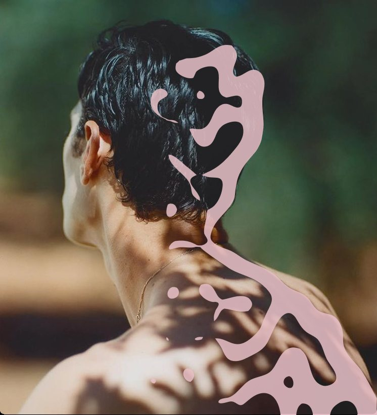
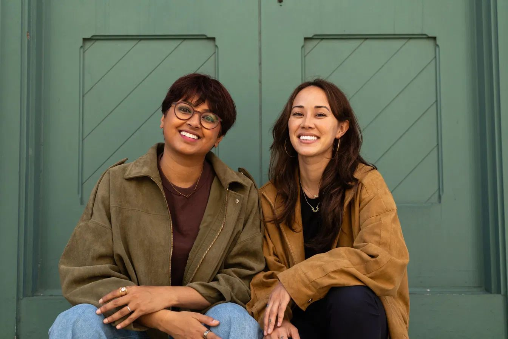
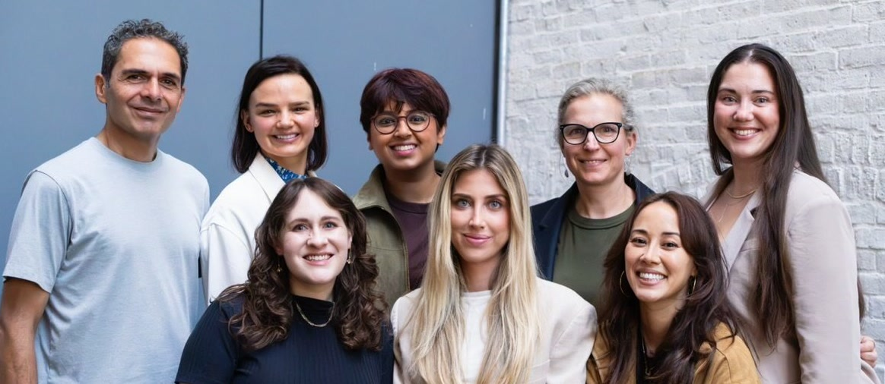
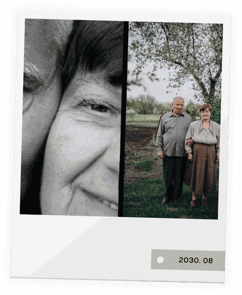
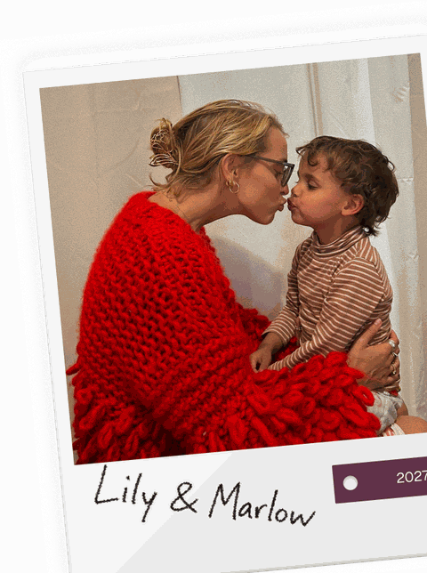

Introducing
A single, 15-minute appointment for more choices later.
A single blood draw, professional isolation, and long-term cryogenic storage in an FDA-registered facility. Stored in your name. Owned by you. Released only on your instruction.
A subsidiary of
Your immune cells shift with age and exposure. The cells you have today are biologically younger, with less accumulated damage, than the cells you’ll have tomorrow. Reservoir makes preserving them simple.
A trained phlebotomist comes to your home for a standard blood draw, done in about 15 minutes.
We extract your immune cells and screen them to ensure the highest quality during the cryopreservation process.
We resuspend your cells in a protective medium and freeze them at a controlled cooling rate.
We place the frozen cells into secure, long-term cryogenic storage below −150°C in an FDA-registered facility.
Most people wait for a reason to think about their cells: a diagnosis, a health scare, a birthday that feels different than the ones before it. But the single best day to preserve your biology is the one that feels the most ordinary: today.

Stored in a professional biorepository with redundant safeguards and a full audit trail of every sample.
From your at-home draw to long-term storage below −150°C, handled end to end.
$4,995 one time
First year of storage included. $270/year thereafter.
A Reservoir phlebotomist comes to your home for a simple 15-minute appointment.

CEO & Co-founder, Cellino
Nabiha co-founded Cellino after conducting research in laser-based cell technology at Harvard. A physicist by training, she has been recognized by MIT Technology Review as an Innovator Under 35 and named to Forbes’ 30 Under 30.
Co-founder & Chief Product and Regulatory Officer, Cellino
Marinna co-founded Cellino after earning her Ph.D. in applied physics at Harvard, where she co-invented the laser-based technology behind Cellino’s platform. She leads product and regulatory strategy, led the submission to secure Cellino’s FDA Advanced Manufacturing Technology designation, and was named to Forbes’ 30 Under 30.

Michael Doney, M.D., MPH
Executive Medical Director, Biograph
More than 20 years in proactive, data-driven care.
David Maggs, M.D., FRCP
Endocrinologist and life sciences leader
Formerly led diabetes and metabolism programs at Pfizer and Amylin.
Brad Younggren, M.D.
President, Viome
Physician and healthcare executive. Former Co-founder and CEO of Circulate Health and President and Chief Medical Officer of 98point6.
Jay Luthar, M.D., DipABLM
Founder, Lutanen Health
Harvard-trained internist and faculty member at Harvard Medical School.
Cellino is a biotechnology company in Cambridge, Massachusetts, building automated, AI-driven manufacturing for personalized cell-based products made from a patient’s own cells.
$80M
Cellino’s Series A financing in 2022, led by Leaps by Bayer, 8VC and Humboldt Fund.
Up to $25M
Awarded to Cellino by ARPA-H, the U.S. Advanced Research Projects Agency for Health, in 2024, to bring personalized cell manufacturing to hospitals.
FDA AMT
FDA Advanced Manufacturing Technology designation for Cellino’s platform.
Cellino’s FDA AMT designation applies to Cellino’s manufacturing platform and does not extend to Reservoir’s preservation service. Cellino’s clinical pipeline programs are separate from Reservoir’s services.
Cellino’s investors include:
Including an $80M Series A led by Leaps by Bayer, 8VC and Humboldt Fund.
It turned out there was a kind of joy you didn’t know existed… Chin up, stay brave, love your family fiercely.

You kept going on ordinary mornings when nobody was watching. You can still carry your own things.
You wanted a big, beautiful, interesting life. I hope you got it… And I hope, looking back, you realize it had already begun.

$4,995 one time, including your first year of storage. Storage is $270 a year after that.
Your at-home appointment, insured shipping, isolation and processing, cryopreservation, and your first year of storage.
Reservoir is for adults 18 and older.
Home visits in the San Francisco Bay Area, Los Angeles and Orange County, San Diego, Seattle, Atlanta, Miami, the New York City area, New Jersey, and New England. Also available by clinic appointment. Check your ZIP above.
A trained phlebotomist comes to your home for a standard blood draw of about 60 mL. No fasting needed. It takes about 15 minutes. We handle everything after that.
We isolate your immune cells, screen them for quality, and cryopreserve them at a controlled rate. They’re stored below −150°C in an FDA-registered facility, monitored 24/7.
Occasionally a sample doesn’t meet our quality threshold. It isn’t a finding about your health. We’ll cover a second draw at no cost.
You do. Nothing is released without your instruction.
No. Your cells stay in storage and aren’t used for research or anything else.
That is up to you and your physician to decide. Reservoir stores cells; we don’t diagnose or predict.
Cord blood banking collects newborn stem cells from the umbilical cord, once, at birth. Reservoir archives your adult immune cells, from a standard blood draw, at any age.
Reservoir is built by the team behind Cellino, a biotechnology company in Cambridge, Massachusetts, and is led by its co-founders, Nabiha Saklayen, Ph.D. (CEO), and Marinna Madrid, Ph.D. (Co-founder & Chief Product and Regulatory Officer).
Have another question? hello@withreservoir.com
One appointment at home. Stored in your name, released only on your instruction.
One appointment, at home.